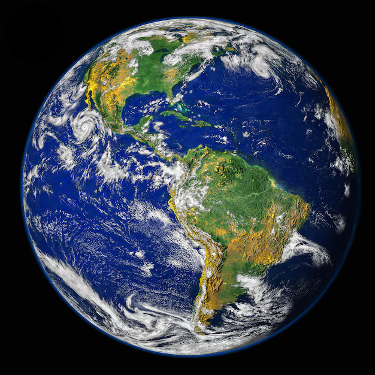

Earth is the third planet from the Sun and the only known planet to support life. It is home to a wide variety of ecosystems and species, ranging from deep ocean trenches to towering mountain ranges.
Earth has a diameter of about 12,742 kilometers and orbits the Sun at an average distance of about 150 million kilometers, a distance known as one astronomical unit (AU). This distance places Earth within the Sun's habitable zone, where conditions allow liquid water to exist.
Earth's atmosphere is composed mainly of nitrogen and oxygen, which supports life and helps regulate temperature. The atmosphere also protects the planet from harmful solar radiation and helps drive weather patterns and climate systems across the globe.
Earth is made up of several layers, including the crust, mantle, outer core, and inner core. The crust is broken into large tectonic plates that shift over time, causing earthquakes, volcanic activity, and the formation of mountain ranges.
Water covers about 71% of the planet's surface, mostly in the form of oceans. This abundance of liquid water, combined with a stable climate and protective atmosphere, has allowed life to flourish on Earth for billions of years, from microscopic organisms to complex ecosystems.
Earth has one natural satellite, the Moon, which plays an important role in stabilizing the planet's axial tilt and generating ocean tides. Without the Moon, Earth's climate and rotation could be far less stable over long periods of time.
Earth is the only planet not named after a Greek or Roman deity, with its name derived from Old English and Germanic words meaning "ground" or "soil." Humans have explored much of the planet's surface and have also ventured into space to study Earth from orbit, gaining valuable insight into its climate and environment.